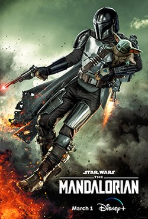
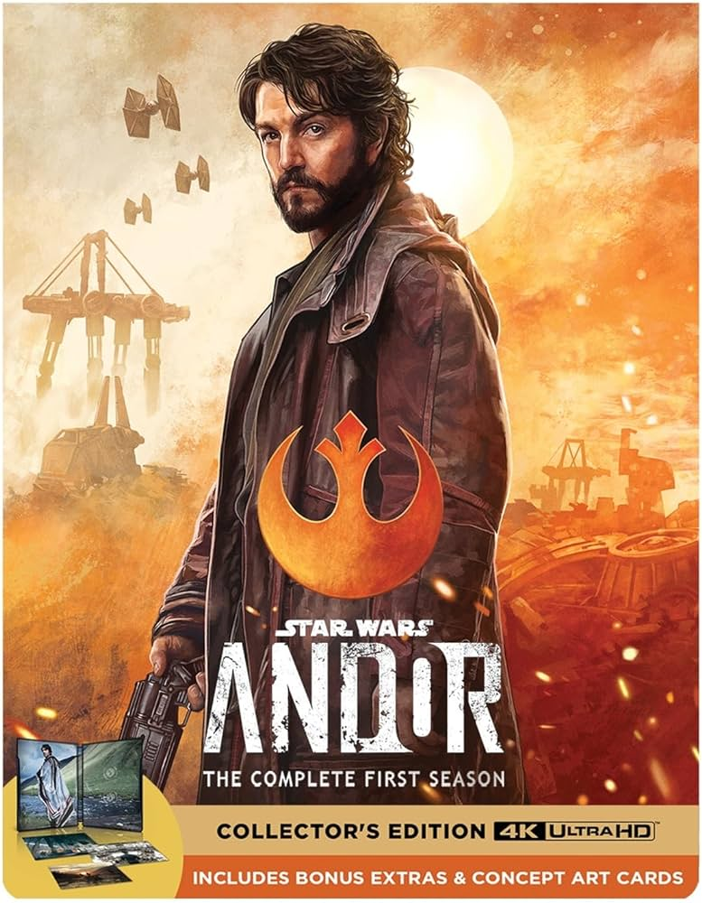

Star Wars: New Shows
Overview:
1. Mandalorian
The Mandalorian is a live-action Star Wars series that follows Din Djarin, a lone bounty hunter in the outer reaches of the galaxy, far from the authority of the New Republic. Set after the fall of the Empire but before the rise of the First Order, the series begins with Din taking on a mysterious bounty: a child known as Grogu (often called "Baby Yoda"). Instead of turning Grogu over, Din chooses to protect him, leading to a series of adventures across the galaxy as they evade Imperial remnants and form unexpected alliances. The show explores themes of honor, identity, and the meaning of family.
2. Ahsoka

Ahsoka is a Star Wars live-action series that follows former Jedi Knight Ahsoka Tano as she investigates an emerging threat to the galaxy following the fall of the Empire. Set after the events of The Mandalorian and Star Wars: Rebels, the series explores Ahsoka's efforts to stop Grand Admiral Thrawn’s return and find her missing friend, Ezra Bridger. Blending action, mystery, and legacy, the show deepens the lore of the Star Wars universe while exploring Ahsoka’s inner journey and her fight against growing darkness.
3. Andor
Andor is a gritty Star Wars series that follows Cassian Andor in the years leading up to Rogue One: A Star Wars Story. Set during the early days of the Rebellion, the show explores Cassian’s transformation from a cynical drifter into a committed freedom fighter. It delves into the rise of the Rebel Alliance, the brutality of the Empire, and the sacrifices made for freedom, offering a grounded, mature take on the Star Wars universe.